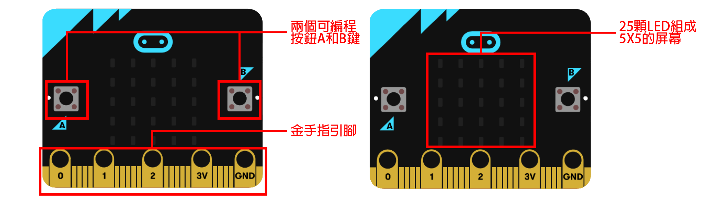
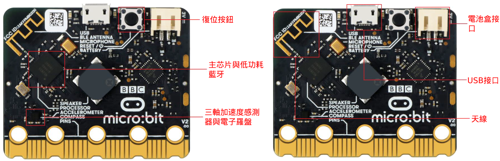

Miaruko
安安～我們又見面了～
歡迎來到第一節課堂～
Micro:bit基本介绍
>
首先，我們來看一下Micro:bit的主板。
Micro:bit包含兩個可編程按鈕，可以對
程序運行進行即時控制。
>

金手指引出25個引腳，可以通過鱷魚夾
和4mm香蕉插頭進行連接。
>
25個5X5的紅色LED組成的點陣，可以顯
示各種圖形，並且編程庫裡已經預設很
多圖像，比如笑臉等。
>
背面包含一個複位按鈕，一個三軸加速
度傳感器，主芯片內部含有一個芯片溫
度檢測裝置。
>

背面還含有一個磁力傳感器，Micro:bit
USB接口，電池盒接口，信號天線。
>
那麼～第一節課堂就到此為止。
感謝各位同學的撥冗聆聽～
>
不過在下課前要做一個小測驗。
如何有任何回答錯誤的話即無法
通關，請重新回饋這節課堂～
>
では、さっさと始めましょう～
(那麼我們開始吧～)
>
問題一
>
Micro:bit主板中央總共有少顆紅色
LED點陣？
16
25
36
0
你是故意的吧，看不見我手上的
Micro:bit有25個5X5的紅色
LED組成的點陣！
>
這個遊戲對你來說過於深奧不適合
你，我建議由幼稚園數學開始學習
，我會為你加油的。
>
很遺憾，回答錯誤。正確答案是25
顆，Micro:bit有25個5X5的紅色
LED組成的點陣。
>
那麼通關失敗，請再接再厲，重新嘗
試。
>
很好，回答正確。Micro:bit有25個
5X5的紅色LED組成的點陣。那麼下一
題。
>
問題二
>
Micro:bit主板總共有多少個按鈕？
1
2
3
4
很遺憾，回答錯誤。我不會告訴你正確
答案啦，請自行思考。
>
很好，回答正確。Micro:bit主板包含
兩個可編程按鈕和一個複位按鈕。那麼
下一題。
>
問題三
>
那一個配件在Micro:bit主板主芯片內
運作？
>
那一個配件在Micro:bit主板主芯片內
運作？
>
三軸加速度傳感器
信號天線
磁力傳感器
USB接口
電池盒接口
溫度檢測裝置
其他
我不懂啊！
那真是太好了，請你重新聽我講解一遍。
>
很抱歉，沒有其他答案，請你重新嘗試。
>
很遺憾，回答錯誤。需要提示嗎？
需要
不需要
很抱歉，我不會提供提示。
>
回答正確。Micro:bit主芯片內部含
有一個芯片溫度檢測裝置。
>
測驗完結，恭喜你完成第一課內容。
接下來也請你再加把勁。
>